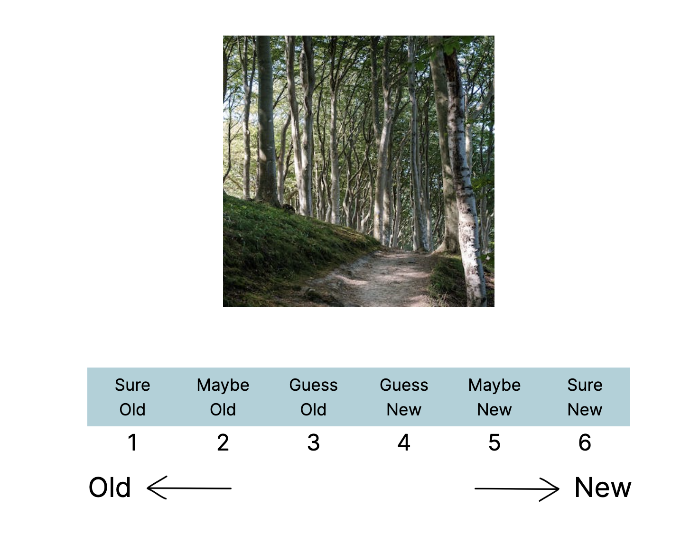

2 Experiment Info
This section contains information about the tasks included in the Sustamos experiments. The ‘classic’ version of the experiment features 3 tasks: the encoding, retrieval, and valence/arousal rating tasks. All three tasks were completed as a part of one session in the ‘classic’ version of the experiment. In the ‘delay’ version of the experiment, the encoding task was completed in Part 1 of the experiment. The retrieval and valence/arousal ratings were completed in Part 2 of the study, which was made available to participants 1 day after completion of Part 1.
2.1 Classic
Experiment details
The ‘classic’ version of the Sustamos experiment is a 1-session/3 task experiment run on Prolific and hosted by Gorilla. It features 3 main tasks: an encoding task, an immediate retrieval task and a affective rating task. These tasks are described in detail below:
2.1.1 Encoding Task
The encoding task is a ~10 minute go/no-go task which features a stream of scene images from the VAMOS set. Participants are instructed to respond with a key press to images within this stream. However, an image will periodically be repeated in the stream back-to-back. In this instance, a participant is instructed to withhold their response.
With this design, we are able to get response time measures leading up to the key repeated image (target image). We are also able to gain mesures of whether participants have made an error, or a lapse, on these critical back-to-back repeated images. Both of these measures will later give us a sense of each participant’s attentional state during the encoding task.
2.1.2 Retrieval Task
Immediately following the encoding task, participants must complete a task which tests their memory for the encoding task target images. Participants are asked to rate their memory for each of these target images on a scale of 1(old)-6(new).

2.1.3 Affective Rating Task
Finally, participants must rate the pleasantness and intensity of the feeling evoked by each of the target and memory lure images. For each image, participants are asked to first rate pleasantness on a scale of 1(very unpleasant) to 9 (very pleasant). Immediately after, participants rate the intensity of this feeling for the same image on a scale of 1(very weak) to 9 (very strong).
2.2 Delay
Experiment details
The ‘delay’ version of the Sustamos experiment is a 2-session/3 task experiment run on Prolific and hosted by Gorilla. It features 3 main tasks: an encoding task, an delayed retrieval task and a affective rating task. These tasks are described in detail below:
2.2.1 Encoding Task
The encoding task is a ~10 minute go/no-go task which features a stream of scene images from the VAMOS set. Participants are instructed to respond with a key press to images within this stream. However, an image will periodically be repeated in the stream back-to-back. In this instance, a participant is instructed to withhold their response.
In the delay version of this task, the encoding portion is completed during session 1 of 2. This is the only task featured in session 1.
With this design, we are able to get response time measures leading up to the key repeated image (target image). We are also able to gain mesures of whether participants have made an error, or a lapse, on these critical back-to-back repeated images. Both of these measures will later give us a sense of each participant’s attentional state during the encoding task.
2.2.2 Retrieval Task
Twenty-four hours after completing session 1 of the experiment, participants return to the study to complete session 2. The retrieval task is the first task in session 2. As in the classic version, participants must complete a task which tests their memory for the target images from the encoding task. Participants are asked to rate their memory for each of these target images on a scale of 1(old)-6(new).
2.2.3 Affective Rating Task
Finally, in session 2 participants will also give ratings of participants must pleasantness and intensity of the feeling evoked by each of the target and memory lure images. For each image, participants are asked to first rate pleasantness on a scale of 1(very unpleasant) to 9 (very pleasant). Immediately after, participants rate the intensity of this feeling for the same image on a scale of 1(very weak) to 9 (very strong).